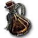
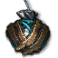

Witcher 3 Enhanced Edition Redux
Levels
A greatly notable change EE brings is the removal of all levels from enemies, quests, items and Geralt himself. Everything is scaled around constants meaning that for example a drowner you may encounter in White Orchard will now be as dangerous as one in Skellige.
This also has the effect of removing any pre-existing restrictions on where you can go and what you can do, if you wish you can go straight to Skellige as soon as you reach Velen. You could even technically play through the entire game now wearing the starting gear if you so desire
This also means that you no longer receive xp as progression to the next level upon completing quests and contracts. However, you do still receive progression in a new way that is covered in the skills section
Items
Witcher Gear
All witcher armour including DLCs have had their stats changed in order to create a unique identity for them which helps suit different play styles for the mod. All witcher gear has unique set bonuses for wearing the entire set however you do not need to wear the swords of witcher schools to attain this, the armour itself is enough
Grandmaster witcher gear is different, however. In default settings you will need to wear the armour and the swords to acquire the secondary set bonus that comes with the set If you wish you can change the required number of gear pieces to apply the effect in the mod menu
Relic Swords
Relic swords were changed so that you no longer find them in an intact state. Instead, you will always find them in a broken state and must take them to Hattori in Novigrad in order to have them restored
Additionally, relic swords are no longer randomly placed loot and are instead placed in unique locations, the same sword will not always appear in the same chest, however. If you are within a certain range of a relic sword Geralt will comment and say he “might want to look around some”. The chests are purposely hidden in locations you would not normally look in so don’t expect to find them immediately
Finally almost all relic swords possess in addition to unique stats a unique ability to differ them from one another
Ranged
The crossbow no longer has an infinite supply of bolts, instead you need to equip different types of bolts in order to use the crossbow. Bolts can be either purchased or crafted by visiting blacksmiths. The mod also expands on the bolt selection and provides some new types for different situations
EE also introduces throwing knives, a familiar item if you have ever played Witcher 2. They can be used as another form of ranged combat if you run out of bolts for instance. They are equipped in the bomb slots and also benefit from the skills in the ranged combat tree
Runes and Glyphs
Runes and glyphs instead of having a linear design of increasing stat changes now have unique stat changes. For example a lesser chernobog rune increases injury chance while a greater chernobog rune increases critical chance
Enchanting
There are now 20 runewords and 18 glyphwords to choose from and each have 3 tiers. All enchantments come with secondary bonus effects as well
To unlock all this however you will need to pay a large amount of coin to the Runewright just like in vanilla:
Tier | Cost |
|---|---|
Basic | 2,500 Crowns |
Advanced | 5,000 Crowns |
Mastercrafted | 7,500 Crowns |
Total | 15,000 Crowns |
Link to a page detailing all the enchantments
Alchemical Items
A large amount of the alchemical items have had their stats tweaked or completely changed with some completely new items being introduced
Oils for instance have been changed from being just static damage increases to applying specific effects such as bleeding, freezing, poisoning, etc.
Alchemy
Toxicity
Drinking potions no longer applies a static increase in your total toxicity but instead applies continuous toxicity over the course of the potions duration. This means that technically you can take an infinite number of potions at once but do keep in mind that the toxicity applied will stack with each potion. The quality of the crafted potion will affect how much toxicity is applied each second making higher quality potions more valuable if you intend to drink multiple
Toxicity is a constant battle between Geralts toxicity gain through potions/poisoning and toxicity drain which happens by default (can be improved through skills). The toxicity gain from a potion can be calculated as Total toxicity of potion / Duration. Geralts drain value by default is 0.2, this value will change with toxicity percentage however (at 50% toxicity for example the drain is at 0.1)
Higher levels of toxicity will lower your vigor regeneration up to 50%, this does not scale linearly however but rather exponentially
Reaching maximum toxicity will trigger toxicity fever which will blur your vision, impair your overall effectiveness in combat and cause strong poison damage that can very easily kill you if you do not pay attention. Toxicity fever will only end once your toxicity drops below 90%
When there is no active potion your drain value will be doubled. Meditating will increase this drain value by 5 times, meditation can even be a life saver if you are on the verge of death from toxicity fever
Crafting Alchemical Items
Alchemy is significantly different to the vanilla system now. Originally you collected specific ingredients to craft an alchemical item that could be refreshed infinitely through meditation.
Alchemical items are reliant on the presence of specific essences that herbs and monster loot contain. They are as follows:
Aether
Hydragenum
Quebrith
Rebis
Vermillion
Vitriol
Ingredients can also possess secondary substances. If all ingredients used share one of these substances the crafted item will receive a bonus effect. They are as follows
Albedo
Nigredo
Rubedo
Ingredients will be of a certain “quality” which will impact the quality of the produced alchemical item. They can be of the following
Contaminated
Quality
Pure
Using higher quality ingredients will result in enhanced and superior versions of the alchemical item however in order to attain this all alchemical items must be of the same quality. In the case of enhanced items however you can use a mixture of pure and contaminated ingredients to create it
Ingredients also possess an attribute of quantity which determines how many of that item will be consumed per alchemical item crafted. They are as follows:
Quantity Attribute | Amount Required |
|---|---|
Weak | 4 |
Moderate | 2 |
Rich | 1 |
When crafting alchemical items you can switch between different ingredients by hovering over an ingredient and scrolling with the mouse wheel (If you do not have alternative ingredients to scroll to the game notifies you).
Once you have decided on your choice of ingredients you can craft the item, this will add it to a queue that will craft all items in that queue once you exit the alchemy menu
Mutagens
Mutagens originally consisted of simple red, green and blue mutagens. Now most monsters will drop a mutagen specific to their monster type. Acquiring more mutagens from other monsters in the same “family” (e.g. all monsters in the Ogoroid class are a part of the same family but not ones from the Vampire class) allows for the creation of archmutagens. Their recipes can be found by reading books related to monster families
Archmutagens and normal monster mutagens can be equipped in the mutagen slots in the skill menu to apply bonuses. The archmutagens can also be used to create decoctions (The archmutagens act like catalysts so they are never used up)
Cooking
You can also purchase recipes for various food items from innkeeps and other shops allowing you to cook a number of foodstuffs. This can also serve as a way of brewing you own alcohol which is essential to making potions and distilling substances
Exploration and Economy
Inventory
All items add weight to your inventory and as per the vanilla game, exceeding your weight limit slows Geralt to a walk
Roach
In addition to being a good mode of transport Roach now serves as your personal stash. Pressing P when near Roach will open up the stash and you can transfer items to and from it, Roach does have a weight limit however but this can be extended by using better saddlebags. You can also quickly open the stash menu by double tapping X
Some stashes do still exist and can be useful as placing weapons and armour in them do not encumber Roach
When in the stash menu you can sort items by their quality by pressing Q. You can also press U to auto transfer miscellaneous items like alchemy ingredients to Roach
Loot
On average you will receive much less loot from containers, this also applies to points of interest such as spoils of war and bandit camps. This can sometimes result in no loot being present in containers which is why sometimes you can come across points of interest you haven’t been to only for them to be greyed out as if you’ve been there already
Pricing
Prices on items have been rebalanced so that selling 50 odd bandit swords you looted is not a viable method of making money anymore
Falling and Fall Damage
When you fall you are at risk of taking a large amount of damage. This can be negated by holding the space key which will cause Geralt to roll upon landing. This ability does have a threshold so don’t expect Geralt to be able to survive jumping off of a high building
Skills
Skills have also received a massive change. Instead of acquiring skill points through levelling up and finding places of power skill points are split into each branch of each skill tree. Each skill has a percentage progression to acquiring a skill point in that branch and this is increased whenever you perform an action related to that branch. This is how it works
Combat Skill Tree
- Fast Attack
Use fast attacks
(Fast Attacks that hit enemies will give 75% more XP)- Strong Attack
Use strong attacks
(Strong Attacks that hit enemies will give 75% more XP)- Defence
Dodge, block and counter
(Perfect Parries and Counters will give 50% more XP) Ranged
RangedUse the crossbow
(Hitting targets gives more XP)- Battle Trance
Complete combat encounters, 1 enemy must die however for progression to happen
(XP gain depends on the total health of all enemies meaning you will recieve much more XP if you fight 4 enemies all at once rather than one at a time. This XP gain also scales exponentially rather than linearly)
Sign Skill Tree
Meditating at a Place of Power will distribute one skill point to the respective Sign.
- Aard
XP gained during usage of Sign.
- Igni
XP gained during usage of Sign.
- Yrden
XP gained during usage of Sign.
- Quen
XP gained during usage of Sign.
- Axii
XP gained during usage of Sign.
Alchemy Skill Tree
Crafting higher quality items will reward more XP.
- Brewing
Craft any potion.
- Oil preparation
Craft any oil and/or applying oils to your sword.
- Bomb Creation
Craft any bomb and/or throw them.
- Mutation
Find mutagens, brewing decoctions and arch-mutagens.
- Trial of the Grasses
Contract toxicity fever and drinking potions
General Skill Tree
Complete quests, win gwent matches and discovering signposts and POIs
Each skill point you invest in a tree branch will reduce its progression rate by 4%. As such you could speed up skill progression by banking skill points and investing all at once. This is not strictly required however
The skill slots have also been completely removed with only the mutagen slots remaining. Now whenever you invest a skill point the skill becomes active and will always remain active. This means that you can have all skills active at once instead of picking and choosing like in vanilla
Additionally the ability to perform Whirl and Rend, deflect bolts and use alternative signs are now unlocked by default
Combat Concepts
Vitality
As per every game with health ever to exist if vitality falls to zero you die Additionally however, as you take more damage you begin to suffer from negative effects that affect your overall combat effectiveness such as lowered stamina and vigor regeneration, you do however receive a buff to adrenaline generation at low health which by extension increases speed offset slowing enemies around you
If you come out of combat with less that 30% health you will be in the injured state which greatly slows your speed and prevents running. When your health returns to above 30% the state is removed
There are not many direct ways to increase your maximum health (by default 10,000) but here are the main methods, all these effects can stack:
Meditating near a fire for 6 hours will increase vitality by 1000 and lasts for 18 hours
Using specific mutagens and archmutagens
Using specific glyphs and glyphwords
Health can be regenerated by eating and drinking (the effects last much longer than vanilla) or through drinking potions such as swallow.
Stamina
Attacking and dodging now consume stamina. Geralts speed and damage output will scale based on how much stamina he has meaning at low stamina he hits slower and weaker. Additionally whenever you perform an action consuming stamina your stamina regen briefly stops meaning you cannot stack stamina regen to mitigate the side effects. Also, there is a stamina regen delay which increases depending on how many actions you perform back to back
If you try attacking/dodging when out of stamina you will incur the Overexerted debuff which reduces Geralts speed and damage output, he also takes more poise damage. This debuff will go away after a few seconds provided that you do not perform more stamina consuming actions otherwise you will keep applying the debuff
Stamina efficiency affects the stamina cost of actions and how much delay they incur. They can be split into three specific types: Offensive Stamina Efficiency which covers attacks Defensive Stamina Efficiency which covers parrying and countering Movement Stamina Efficiency which covers dodging and running Stamina Efficiency sources will stack but at a diminishing rate meaning it is more ideal to spread efficiency to all types rather than to one specific type e.g. offence
The armour you wear will also determine how much stamina is consumed per action, heavy armour will of course be more taxing than light armour
In the stamina section of the mod menu are some presets which affect the way in which stamina works overall:
- Redux
The default preset and the most friendly to new players
- Dynamic
High stamina costs but high stamina regen. Similar in design to Dark Souls
- Strategic
Low stamina costs but lower stamina regen as well as higher penalites
Vigour
What used to be the adrenaline bar is now the vigour bar. Every time you use a sign a third of the bar is depleted. For every point of vigour spent you will reduce the total amount of damage dealt by 10% up to 30% as well as reduce your sign intensity by 20% up to 60% on an empty bar
Poise
What used to be the experience bar is now the poise bar. Defensive actions like countering and parrying will cost an amount of poise, taking damage also takes away some poise. Running out of poise will stun Geralt and he will be incredibly vulnerable to attacks. Poise has a longer delay than other stats before regenerating. Poise cost and regen delay is affected by defense stamina efficiency. Standing still also reduces regen delay
Enemies also have poise of their own. Draining the poise of a humanoid enemy will allow geralt to perform a finisher instantly killing them. If the poise of a non-humanoid enemy is drained they will take a larger portion of damage and be injured
Poise is affected by the armour you wear. Heavy armour provides more poise than light and medium armour. Certain glyphs, glyphwords and the tiara potion can also increase your poise. All poise increases stack additively
Adrenaline
Adrenaline is an accumulating stat that builds whenever you hit enemies, counter attacks, kill enemies or take damage. You also gain more adrenaline depending on how many enemies are present. The higher your adrenaline the higher your stamina and vigour regeneration
If your adrenaline reaches 100 you will gain 20% more damage, stamina efficiency, stamina regen and vigour regen. You also gain up to 30% speed offset which scales with missing health
Status Effects
Most status effects have similar functionalities to vanilla but 2 have received extensive changes: Bleed and Poison
Bleed can be applied through monster attacks and will slowly deal damage over time Poison can be applied from specific monster attacks. It deals less damage per second than bleed but also increases Geralts toxicity meaning it can trigger toxicity fever if it gets too high
Bleed and poison can also be applied to enemies. Applying bleed reduces enemy stamina regen while applying poison reduces enemy speed and damage
Bleed and Poison both also stack to 10. Applying more will still deal damage but it will not stack past 10
Potions can also help mitigate the effects. Bleed can be countered with swallow while poison can be countered with golden oriole
Another status effect that can be applied to enemies is Freeze. To successfully freeze an enemy you need to hit them with 2 sources of Freeze. They are:
 Rime Oil
 Northern Wind
One of
 Aards skills in the sign tree
Aards skills in the sign treeRunestones
Innate effect from a sword
Injuries
When you are hit there is a 5% chance you will receive an injury, the injury in question will affect a part of Geralts overall combat effectiveness. Injuries will also always incur a stack of bleeding Head injuries cause blindness, debuff stamina and vigor regen, taking more damage will result in more blindness Torso injuries reduce bleed resistance and defence efficiency. You may also be staggered when parrying Arm injuries reduce attack speed and efficiency. You may also be staggered when attacking Leg injuries reduce movement speed and efficiency. You may also be staggered when dodging
Injuries can only be removed by meditating to full health, using bandages or drinking swallow
Some enemies also have special attacks that deal less damage but have a much higher chance of inflicting specific injuries. For example, scream attacks can inflict head injuries while stomp attacks can deal leg injuries
Your resistance to receiving injuries can be increased though skills, armour and glyphs
Signs
The signs have received changes in order to make each one of them a viable choice instead of being overshadowed by  Quen
Quen
The strength of signs is also determined by a value known as Sign Intensity. In short, it affects the following values for the signs:
Sign | Intensity Effects |
|---|---|
| Damage, Knockdown Chance, Chill Chance & Duration, Stun Chance, Poise Damage |
| Damage, Burn Chance, Armor Reduction |
| Radius, Duration, Damage, Snare Duration |
| Health, Vigor Drain (Active- |
| Chance, duration, lethargy debuffs |
Aard
Deals a sizable chunk of damage to enemies. Its alt mode deals less damage but has greater crowd control capabilities
Can also be used like in vanilla to knock flying enemies out of the air, useful if you won't or can't use the crossbow
Can also be used underwater to deal considerable damage to enemies
 Igni
Igni
Deals damage to group of enemies, and has the chance of setting enemies on fire. Armor.
When properly developed alt  Igni can do generally more damage and can also lower the armour value of enemies
Igni can do generally more damage and can also lower the armour value of enemies
 Yrden
Yrden
While standing in the circle a time slow effect is applied allowing more time to make decisions
Enemies that remain in the circle for a period of time will become snared allowing you to recuperate or take advantage and attack
Alt Mode: Places a Glyph of Warding down on the floor, which then damages enemies whenever they try to attack you, or take an offensive action, and will stop bolts or arrows.
 Quen
Quen
Instead of reducing all incoming damage it reduces a percentage of the incoming damage based on the number of remaining points in the  Quen shield. Every time you take damage the number of points is lowered meaning you will take more and more damage with each hit
Quen shield. Every time you take damage the number of points is lowered meaning you will take more and more damage with each hit  Quen also reduces your vigour regeneration when active
Quen also reduces your vigour regeneration when active
Alt-Mode: While active, getting hit will restore stamina at a cost of vigour.
Through timing you can perform counters with  Quen which also generate adrenaline
Quen which also generate adrenaline
 Axii
Axii
Similar function to vanilla but with a lot of bug fixes  Axii can be useful for isolating individuals in crowd control. It is also handy for setting up signs and bombs to be used
Axii can be useful for isolating individuals in crowd control. It is also handy for setting up signs and bombs to be used
Combat Controls
Distance modifiers and counters by holding Ctrl or Shift Geralt will change the distance he covers with a sword swing:
- Left-Click
Short Distance
- CtrlLeft-Click
Medium Distance
- ShiftLeft-Click
Long Distance
The keys also apply to the counters Geralt will perform when pressing the parry key:
- E
Normal Parry
- CtrlE
Kick Counter
- ShiftE
Bash Counter
Attack Bending
If you have switched manual targeting on Geralt will not attack the closest enemy but instead where the camera is pointing. With some skill you can utilise the distance modifiers to bend attacks around enemies to strike them in the back which causes more damage
Parrying
By holding E geralt will enter the defensive state, in this state any incoming attacks from the front or behind will be blocked and arrows/bolts will be deflected as well (special projectiles like cocatrice spit will not be deflected)
Every time you parry an attack an amount of stamina and poise is used, if you do not have enough stamina only a portion of the damage will be negated
Other General Information
Trophies
Trophies no longer have any special bonuses tied to them and only serve as a good source of extra money provided you sell them to the right merchant. Merchants in Skellige offer good prices early on while Toussaint merchants will pay the most for them
Night Sight
The night vision effect provided by Cat has been transferred to a toggleable key that can be toggled both in gameplay and cutscenes. Cat serves a different purpose now
Meditation
Meditation is required to perform most actions in this game such as brewing, applying skill points and more. Some of these functions even specifically require you to meditate at a campfire.
If you have wood in your inventory you will automatically create a campfire where you meditate. Otherwise you will likely need to seek out settlements to find campfires
Shaving
Using a razor while meditating while shave Geralt free of charge
Movement speed
Scrolling with the mouse wheel will allow Geralt to shift between walk, fast walk and running easily
Bomb Timers
Bombs no longer instantly explode when you throw them but rather have a short delay now, you can also charge the bomb by holding it in your hand for a moment which will cause it to explode immediately when thrown
Fire damage and the crossbow can also instantly detonate the bomb if used
Oil effectiveness
When you apply an oil to your sword it has a percentage for how effective it is. Having your sword out will slowly drain the oil so it is ideal to only draw your sword when needed. You also lose percentage at a greater rate when hitting enemies. The rate of loss can be reduced through skills
Workbenches and Grindstones Using the workbench will apply bonuses that reduce the rate at which armour loses durability. Using the grindstone will apply this for swords
These bonuses last indefinitely and only go down when you get hit in combat and/or hit opponents
Integrated Mods
All Quest Objectives On Map by Wolfmark
Alternate Lightsources Interaction by DJ_Kovrik
Friendly HUD by Wasteland Ghost
More Quick Slots and Quick Inventory by Wolfmark
E3 2014 VGX More Blood by KNG
Immersive Cam by KCS
Manual Bomb Aiming by eutirion
Lore Friendly Economy by stefan3372
Enhanced Targeting by Mpstark
No Duplicate Relics by Partoutatix
Friendly Stash by Wasteland Ghost
Community Patch - Shared Imports by rmemr